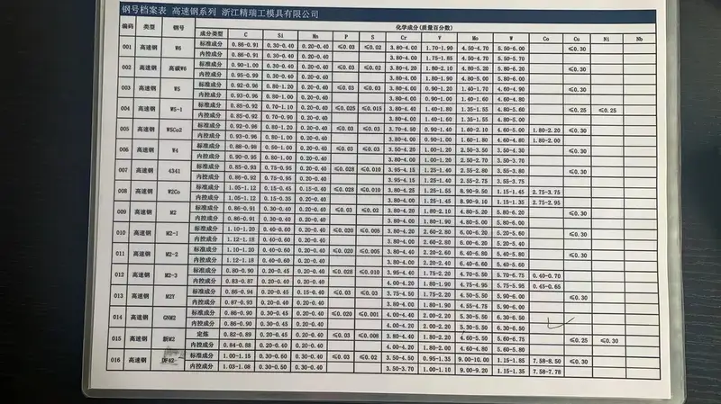

Overview
Technical Specs
耐磨件
蒂森克虏伯
ERC偏心辊破
蒂森克虏伯ERC偏心辊式破碎机结合颚破和辊破优势于一体。偏心辊同时产生压缩和冲击力，紧凑设计实现高破碎比。处理能力高达8,000 tph，ERC在硬岩初碎中表现卓越。安然科技提供ZG30CrMnMo和Mn18Cr2合金钢冲击条、破碎段和辊壳。
Typical Applications
Factory
生产实拍 — 安然科技车间


.webp)
.webp)

Technical Data
ERC偏心辊破 — 型号
| 型号 | 耐磨件 |
|---|---|
| 型号 | ERC 18-14 to ERC 25-30 |
| 处理能力 | 200-2,500 tph |
| 最大给料粒度 | Up to 1,300mm |
| 产品粒度 | P80 50-200mm |
| 功率 | 132-560 kW |
| 型号 | 1000Series , 625 Series , 500 Series |
| 材料牌号 | AISI 4150 |
兼容型号（OEM目录）
DRS 500x1000DRS 500x1500DRS 660x1500DRS 660x2000DRS 800x1500DRS 1000x2000DRS 1000x3000DRS 1250x2000DRS 1250x3000DRS 1500x3000DRS 1500x4000DRS 500x2000DRS 660x3000
| 破碎阶段 | Primary, Secondary |
耐磨件
辊段：硬化合金钢配螺栓连接齿段。破碎段：高锰钢或铬钼钢。
耐磨件
ERC偏心辊破 耐磨件
型号
ERC 18-14 to 25-30
耐磨件
辊段、破碎段
破碎辊壳/辊段
ERC 18-14至ERC 25-30的偏心辊面；结合旋回压缩和辊碎进行初碎
ZG30CrMnMoGB ZG30CrMnMo / 铬锰钼合金铸钢
硬度HRC 45-55
冲击韧性AKV 10-15J
抗拉强度≥ 850 MPa
屈服强度≥ 650 MPa
| Grade | C | Si | Mn | Cr | Mo | Ni |
|---|---|---|---|---|---|---|
| ZG30CrMnMo | 0.26-0.34 | 0.40-0.80 | 0.90-1.30 | 0.90-1.30 | 0.15-0.25 | — |
硬度与韧性的优异平衡；专为分级机齿板的冲击+剪切复合载荷优化
颚板（固定破碎面）
固定对冲破碎面；与旋转辊壳共同形成楔形破碎区
Mn18Cr2GB ZGMn18Cr2 / ASTM A128 B-4
硬度HB 230-300 (work-hardens to HRC 48-58)
冲击韧性AKV ≥ 60J
抗拉强度≥ 800 MPa
屈服强度≥ 420 MPa
| Grade | C | Si | Mn | Cr | Mo | Ni |
|---|---|---|---|---|---|---|
| Mn18Cr2 | 1.05-1.35 | ≤1.0 | 16.0-19.0 | 1.5-2.5 | — | — |
更高锰含量提供更深的加工硬化层；在高压缩工况下使用寿命比Mn13长20-30%
冲击条/破碎段
ERC偏心辊式破碎机冲击段；辊上可更换破碎面
Mn18Cr2GB ZGMn18Cr2 / ASTM A128 B-4
硬度HB 230-300 (work-hardens to HRC 48-58)
冲击韧性AKV ≥ 60J
抗拉强度≥ 800 MPa
屈服强度≥ 420 MPa
| Grade | C | Si | Mn | Cr |
|---|---|---|---|---|
| Mn18Cr2 | 1.05-1.35 | ≤1.0 | 16.0-19.0 | 1.5-2.5 |
更深的加工硬化层；高压缩工况下比Mn13寿命长20-30%
ZG30CrMnMoGB ZG30CrMnMo / 低合金铸钢
硬度HRC 45-55
冲击韧性AKV ≥ 35J
抗拉强度≥ 900 MPa
屈服强度≥ 650 MPa
| Grade | C | Si | Mn | Cr | Mo |
|---|---|---|---|---|---|
| ZG30CrMnMo | 0.25-0.35 | 0.3-0.6 | 0.8-1.2 | 0.8-1.2 | 0.15-0.30 |
高强度耐磨，适用于分级机齿板；验证成分，完整质检文档
为什么选择安然科技
- ZG30CrMnMo辊壳段适用于ERC 18-14至ERC 25-30；硬度韧性平衡应对冲击-剪切复合载荷
- 快换辊壳设计；段更换<4小时 vs 传统旋回衬板12+小时
- 全ERC系列覆盖：ERC 18-14至ERC 25-30